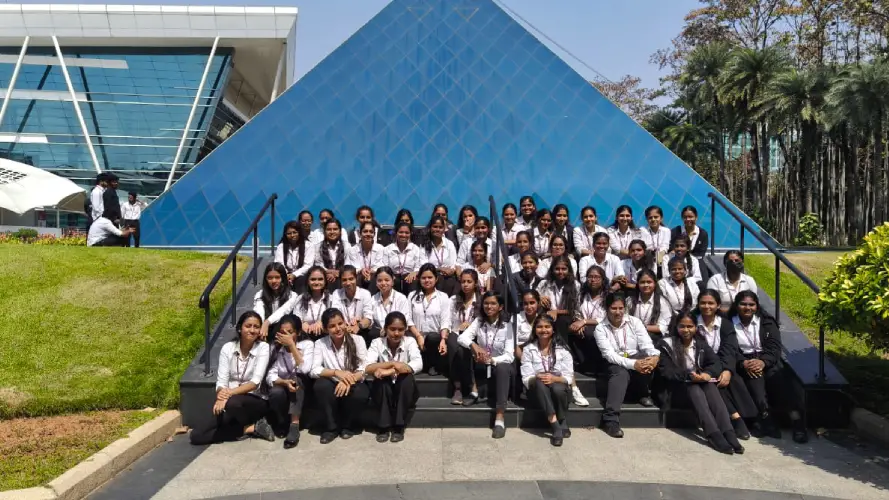
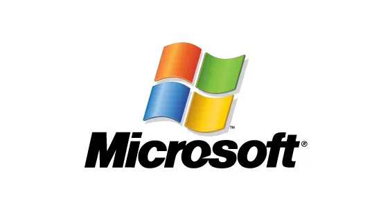
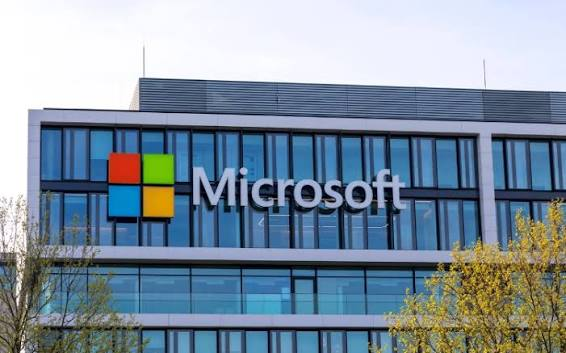

City : Bangalore
Service Based Company




Infosys (NSE: INFY, NYSE: INFY) is an Indian multinational IT services and consulting giant headquartered in Bengaluru. Founded in 1981 by seven engineers with just $250, it is now India's second-largest IT company by revenue. Today, it employs over 320,000 people globally and operates in more than 50 countries.
Infosys offers a wide array of services including AI-powered analytics (via Infosys Topaz), cloud migration, cyber security, and business process management (BPM). The company is famously known for pioneering the "Global Delivery Model" in the IT industry. It also holds the distinct title of being the first Indian company to be listed on the NASDAQ (in 1999).
Infosys provides global IT, consulting, and business process management (BPM) services. Their core offerings include digital transformation, cloud migration (Infosys Cobalt), AI/automation (Infosys Topaz), enterprise application implementation (SAP, Oracle, Salesforce), cybersecurity, and software products like the Finacle banking platform.
Could you tell me what industry you operate in or what specific business challenge you are trying to solve? I can detail exactly how Infosys targets those particular needs.
Infosys is a global technology consulting and IT services company that helps large organizations undergo digital transformation. They assist businesses by streamlining operations, modernizing cloud infrastructure, developing custom software, and integrating Artificial Intelligence (AI) to improve efficiency and customer experiences.
🏢 Company :Infosys
📍 Head Office Address: Plot No. 44/97A, Hosur Road, Electronic City, Bengaluru, Karnataka – 560100.
📞 Phone : +91 80 2852 0261
🌐 Official Website : infosys



Microsoft Corporation is an American multinational technology giant headquartered in Redmond, Washington. Founded on April 4, 1975, by childhood friends Bill Gates and Paul Allen, the company is the world's largest software maker and a global leader in cloud computing and artificial intelligence (AI). Under the leadership of Chairman and CEO Satya Nadella, its core mission is to "empower every person and every organisation on the planet to achieve more".
Intelligent Cloud : This segment centers on Microsoft Azure, a comprehensive public cloud computing platform. It provides enterprise-grade infrastructure, analytics, and app development tools utilized by over 95% of Fortune 500 companies.
Productivity & Business Processes : This includes the ubiquitous Microsoft 365 suite (Word, Excel, PowerPoint), collaboration tools like Microsoft Teams, and enterprise solutions like Dynamics 365. It also encompasses LinkedIn, the professional networking platform.
More Personal Computing : This division handles consumer-facing tech, led by the Windows Operating System, which powers the vast majority of personal computers globally. It also includes the Xbox gaming ecosystem, Surface personal hardware, and the Bing search engine.
Microsoft operates multiple massive campuses in Bangalore, housing R&D, customer support, and sales operations. The primary hubs are located at Embassy Golf Links Business Park (Domlur) and Manyata Embassy Business Park (Hebbal). They provide localized cloud computing, enterprise tech support, R&D, and digital transformation consulting.
Microsoft helps individuals, businesses, and developers through a vast ecosystem of software, hardware, cloud computing, and AI deployment services.
Productivity : Provides essential day-to-day apps like Word, Excel, PowerPoint, and Outlook via Microsoft 365.
Operating Systems : Powers most of the world's personal computers through Windows 11.
AI Assistance : Enhances search, drafting, and creativity using Microsoft Copilot and Microsoft Designer.
Cloud Storage : Backs up photos, videos, and files securely using OneDrive.
Entertainment : Offers immersive hardware and subscription gaming through Xbox and Xbox Game Pass.
Team Collaboration : Connects remote and hybrid teams using Microsoft Teams and SharePoint.
Cloud Infrastructure : Hosts, builds, and manages global applications safely via the Azure Cloud Platform.
Enterprise AI Integration : Deploys dedicated experts directly into companies via the $2.5 billion Microsoft Frontier Company unit to build custom corporate AI models using private internal data.
Startup Scaling : Provides up to $150,000 in free Azure credits and expert development tools through the Microsoft for Startups Founders Hub.
Personal Accounts : Fix login, billing, or subscription issues through Microsoft Account Support.
Business Administrators : Manage corporate users and open advanced enterprise tickets via the Microsoft 365 Admin Center.
Developer Questions : Troubleshoot environments, languages, and frameworks using community experts on Microsoft Q&A.
🏢 Company : Microsoft India (R&D) Pvt. Ltd.
📍Address : Prestige Ferns Galaxy, Outer Ring Road, Ambalipura, Varthur Hobli, Bengaluru – 560103, Karnataka, India.
🌐 Official Websites :
Microsoft India : Microsoft.com
Microsoft India Contact Page :Microsoft/contact/.com